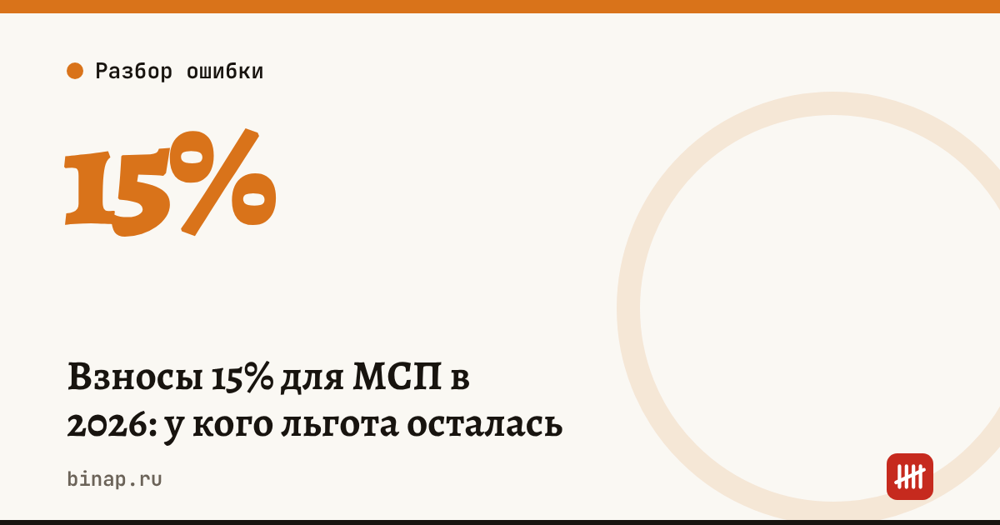

Взносы 15% для МСП в 2026: у кого льгота осталась

Универсальный тариф 15% для малого и среднего бизнеса отменён. Льгота осталась только у МСП из приоритетных отраслей.
Что это значит:
- Закон от 28.11.2025 № 425-ФЗ убрал автоматическое право на 15% для большинства МСП.
- Льготу сохранили МСП из перечня (распоряжение правительства от 27.12.2025 № 4125-р) при трёх условиях: статус МСП, основной ОКВЭД из перечня, не менее 70% доходов от профильной деятельности по итогам каждого отчётного периода.
- 15% применяется к выплатам сверх 1,5 МРОТ, остальное облагается по 30%.
- Закон от 25.04.2026 № 104-ФЗ (действует с 1 января 2026 года): доходы по льготным ОКВЭД суммируются при проверке порога 70%; для обрабатывающих производств проверку доли доходов за прошлый год отменили.
- Без льготы: оптовая и розничная торговля, строительство, добыча полезных ископаемых, финансовая деятельность, операции с недвижимостью (кроме посреднических услуг, код 68.3).
- Аккредитованные ИТ-организации перешли с единой ставки 7,6% на двухступенчатую шкалу: 15% в пределах предельной базы 2 979 000 ₽ и 7,6% сверх неё.
Что сделать сейчас:
- Проверьте основной ОКВЭД в ЕГРЮЛ/ЕГРИП и посчитайте долю профильных доходов по итогам каждого периода.
- Если право на льготу появилось после 25 апреля 2026 года, пересчитайте взносы и подайте уточнённый РСВ.
- Заполните Приложение 3.1 к разделу 1 РСВ: отразите все льготные коды ОКВЭД и доходы по каждому.
- Пересмотрите бюджет на ФОТ на случай, если льготы у вас нет.
Применять пониженную ставку нужно, если условия выполнены: это обязанность, а не право. Излишне начисленные взносы нельзя учесть в расходах по налогу на прибыль или УСН.
Частые вопросы
Может ли торговля платить 15%? Нет, оптовая и розничная торговля в льготный перечень не входит.
Что считается порогом? Не менее 70% доходов от профильной деятельности по итогам каждого отчётного периода: квартала, полугодия, 9 месяцев, года.
Источники